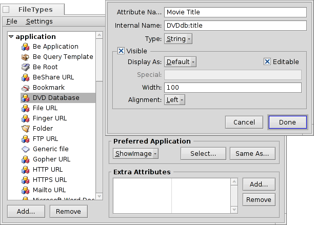

Português (Brazil)
Português (Brazil) Català
Català Deutsch
Deutsch English
English Español
Español Français
Français Italiano
Italiano Magyar
Magyar Polski
Polski Português
Português Română
Română Slovenčina
Slovenčina Suomi
Suomi Svenska
Svenska 中文 ［中文］
中文 ［中文］ Русский
Русский Українська
Українська 日本語
日本語| Índice |
|
Preparação Criando um tipo de arquivo personalizado Ícone Reconhecimento de arquivo Descrição Aplicativo Preferido Atributos Extra Indexação Preenchimento dos dados Consultando a base de dados |
Oficina: Tipos de arquivos, Atributos, Indexação e Consultas
Esta é uma oficina para mostrar o uso dos Atributos, Consultas, a Indexação e Tipos de arquivos personalizados. Como um exemplo, vamos construír uma base de dados para para acmpanhar a nossa biblioteca de DVDs.
 Preparativos
Preparativos
Vamos primeiro decidir que tipo de arquivo e atributos servirão às nossas necessidades. Originalmente, planejei usar um arquivo de marcador com um vínculo à página de filmes IMdB, mas uma vez que o Haiku não tem um navegador "marcável" como o NetPositive do BeOS no momento, vim com essa: o arquivo em si será uma imagem JPEG para a capa do filme.
Com o WebPositive, o Haiku agora tem novamente um navegador usando arquivos de marcador, então poderia muito bem utilizar um arquivo de marcador ao invés de uma imagem como tipo de arquivo básico para nossos arquivos de base de dados.
Em qualquer caso, para estes arquivos adicionamos um par de atributos. Aqui temos que decidir se queremos consultá-lo mais tarde (então temos que adicioná-lo ao indexador) e sendo assim, que tipo de atributo deveria ser. Números (int, float) podem ser avaliados diferentemente de texto (</=/> versus é/contém/começa com).
Eis os atributos que gostaria de ver para meus DVDs:
- Título do filme
- Gênero
- URL para, por exemplo, IMdB
- Diretor/Elenco
- Enredo
- Minha cotação de 1 a 10
- Coordenadas em minha prateleira, por exemplo A2, B3, então encontro o DVD também na vida real :)
- Se for o caso, a quem o disco está emprestado...
Criando um tipo de arquivo personalizado
Inicie as preferências dos Tipos de arquivos e clique no botão abaixo da lista hierárquica na esquerda. Um pequeno diálogo abre e pode-se especificar em qual Grupo MIME seu novo tipo de arquivo residirá. Pode-se também criar um grupo completamente novo. Vamos colocá-lo dentro de "aplicativos" e definir o "Nome Interno" como DVDdb.

Agora, uma caixa de diálogo para seu novo tipo de arquivo DVDdb se abre:

Ícone
Clique duas vezes na área do ícone para abrir o Icon-O-Mático e desenhar um ícone para seu tipo de arquivo. Pode-se também arrastar e soltar um ícone da área de ícone de outro tipo de arquivo, talvez como ponto de partida para uma versão modificada.
Reconhecimento de arquivo
Pode-se adicionar sufixos como .txt, .jpg, .mp3 para reconhecer arquivos por sua extensão. Útil ao trabalhar com arquivos de sistemas sem tipagem MIME. Nós não precisamos disso para nosso exemplo.
Descrição
- Nome do tipo - Aparece, por exemplo, no menu de Atributo da janela do Rastreador e a "Espécie de" atributo de um arquivo.
- Descrição - Uma descrição um pouco mais detalhada.
Aplicativo Preferido
Este menu pop-up mostra uma lista de todos os aplicativos que podem manipular este tipo de arquivo em particular. Aqui pode-se escolher qual programa deve abrir este arquivo específico quando lhe damos duplo clique.
| abre um diálogo de arquivo onde se escolhe o aplicativo para abrir com este tipo de arquivo. Aqui, nós definimos Mostrar Imagem para exibir a capa do DVD. | ||
| abre um diálogo de arquivo onde se escolhe qualquer arquivo que já tenha a definição do aplicativo preferido que se está procurando. |
Atributos Extra
Here we enter all the custom attributes we decided on in our preparations. Clicking the button opens a panel to enter all the data for the new attribute. You can edit an existing attribute with a double-click.
Nome do atributo - Aparece, por exemplo, como o título da coluna na janela do Rastreador.
Nome interno - É utilizado para indexar e consultar o atributo.
- Tipo - Define o valor que o atributo pode conter e portanto como ele pode ser consultado.
- para texto normal
- para dados binários: 0 ou 1
- para números inteiros com diferentes extensões:
- : ± 255
- : ± 65,535
- : ± 4,294,967,295
- : ± 18,446,744,073,709,551,615
- para números de ponto flutuante, precisão singular
- para números de ponto flutuante, precisão dupla
- para formato de hora e data
- Visível - Esta caixa de controle determina se o atributo é visível em tudo na janela do Rastreador. Uma vez que o Rastreador será a interface para nossa base de dados de DVD, nós a marcamos e definimos sua aparência com:
- - Deixe como "Padrão". No futuro mais opções se tornarão disponíveis, por exemplo uma barra ou estrelas para uma avaliação, etc.
- - Determina se o atributo deve ser editável no Rastreador.
- - A largura padrão daquela coluna de atributos numa janela do Rastreador.
- - O atributo pode se exibido alinhado à esquerda, no centro ou à direita.
Agora, insira todas as informações para nossos atributos:
| Nome Interno | Tipo de atributo | indexado? | Descrição |
|---|---|---|---|
| DVDdb:titulo | text | sim | Título do filme |
| DVDdb:genero | text | sim | Gênero |
| DVDdb:url | text | não | URL |
| DVDdb:elenco | text | sim | Diretor/Elenco |
| DVDdb:enredo | text | não | Enredo |
| DVDdb:avaliacao | int-32 | sim | Avaliação 1 to 10 |
| DVDdb:coord | text | não | Prateleira |
| DVDdb:emprest | text | sim | Emprestado a |
Indexação
Antes de começarmos a inserir dados em nossa pequena base de dados de DVD, nós devemos adicionar certos atributos ao Indexador. Apenas atributos indexados podem utilizar Consultas rápidas do Haiku.
Então, o que iremos procurar no futuro? Nós provavelmente não perguntaremos "O que está na coordenada B4 em minha prateleira?" ou "A URL do IMdB ou o enredo do filme contém a palavra 'pope-shenooda'?".
Isso nos deixa estes atributos:
| Nome Interno | Tipo de atributo |
|---|---|
| DVDdb:titulo | text |
| DVDdb:genero | text |
| DVDdb:elenco | text |
| DVDdb:avaliacao | int-32 |
Para indexá-los, nós abrimos um Terminal e simplesmente adicionamos um atributo após o outro:
mkindex -t string DVDdb:titulo mkindex -t string DVDdb:genero mkindex -t string DVDdb:elenco mkindex -t int DVDdb:avaliacao
A opção -t define o tipo de atributo, o qual é "sequência" para todos menos a avaliação, a qual é um número inteiro.
Preenchimento dos dados
Agora, tudo está definido e nós podemos começar a colocar alguns dados na nossa base.
Uma vez que nosso arquivo básico é uma imagem de capa, vamos a alguma fonte online como o IMdB, procurar por nosso primeiro filme e salvar a capa ou poster do filme em uma nova pasta onde queremos manter nossos arquivos DVDdb.
Abrindo aquela pasta vemos uma janela típica do Rastreador com uma JPEG nela. Clicando com o botão direito nela, alteramos seu tipo de arquivo para application/DVDdb com o Adicional de Tipo de Arquivo. Existe mais informação sobre isso no documento Tipos de Arquivo.
Agora, ativamos todos os nossos atributos DVDdb a partir do menu da janela do Rastreador menu of the Tracker window e rearranjamos as colunas a nosso gosto:

Ao clicar num atributo ainda vazio (ou pressionando ALT E) entramos no modo de edição e preenchemos cada atributo. Com TAB and SHIFT TAB podemos navegar entre os atributos.
No nosso exemplo, nós começamos com uma capa JPG baixada e mudamos seu tipo para applications/DVDdb. Existe outra forma elegante de produzir um arquivo para trabalhar com ele. Apenas copie um arquivo vazio de seu tipo de arquivo para /boot/home/config/settings/Tracker/Tracker New Templates e renomeie-o para DVDdb.
Clicando com o botão direito dentro da janela do Rastreador, encontraremos uma nova entrada sob além do padrão "Nova pasta".
Consultando a base de dados
Muitas horas de trabalho barulhento depois, temos um pequeno e belo banco de dados que pode ser consultado para encontrar todos os seus filmes de Christina Ricci que possuam nota 7+... :)
Pode-se atribuir uma disposição de atributo sensível para resultados de consulta de um tipo de arquivo específico.
Abra a pasta contendo seus arquivos DVDdb e arrume os atributos da forma como gostaria de ter apresentados os resultados de consulta. Copie esta disposição com .
Abra /boot/home/config/settings/Tracker/DefaultQueryTemplates, crie uma nova pasta e renomeie para grupo/tipo de arquivo, substituindo barras por sublinhados; no nosso caso, "aplicativos_DVDdb".
Abra a nova pasta e cole dentro a disposição com . Voilà: